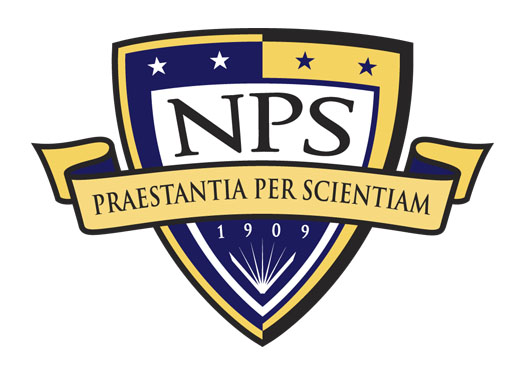
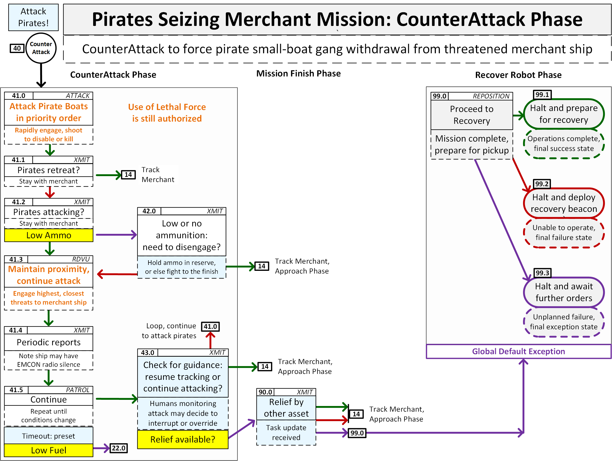

|
Ethical Control of Unmanned Systems |
 |
Ethical control of unmanned systems can be accomplished through structured mission definitions that are consistently readable, validatable and understandable by humans and robots. Responsible humans must remain in charge of lethal/lifesaving force, and then human-robot teams become more effective.
Synopsis | Briefings | Design Overview | Documentation | Download | Missions | Ontologies | OwlDoc | Queries | Resources | Savage Developers Guide | Visualization | Contact
Project Motivation: ethically constrained control of unmanned systems and robot missions by human supervisors and warfighters.
Precept: well-structured mission orders can be syntactically and semantically validated to give human commanders confidence that offboard systems will do what they are told to do, and further will not do what they are forbidden to do.
Project Goal: apply Semantic Web ontology to scenario goals and constraints for logical validation that human-approved mission orders for robots are semantically coherent, precise, unambiguous, and without internal contradictions.
Long-term Objective: demonstrate that no technological limitations exist that prevent applying the same kind of ethical constraints on robots and unmanned vehicles that already apply to human beings.
Design heuristics for new mission capabilities:
Abstract. Ethical human supervision of unmanned maritime systems is foundational in future naval warfare. Forward-deployed unmanned systems in the human-machine team must comply with their Commander's intent throughout the duration of their existence in potential future conflicts. Maritime deployment includes harsh physical domains, long distances from each Commander, and prolonged on-station time, all of which can significantly stress the capabilities of the unmanned systems and limit their operator's control. Therefore, in order to apply ethical control of unmanned systems in future undersea warfare, we develop an ontology for unmanned systems mission execution and design. This project is studying multiple canonical missions for unmanned maritime systems, with progressive sophistication, in order to test and evaluate Ethical Control design on the autonomy of the unmanned systems. The goals of this research are to ensure unmanned maritime systems comply with existing policy guidance of the U.S. Department of Defense and relevant international organizations, further providing inputs to emerging policy guidance. Our vision is for Commanders to be confident in authorizing life-saving or lethal force from unmanned systems that operate under ethical control in collaboration with human forces. Simulation playback of multiple key scenarios demonstrates these principles in action, and building a TestDevOps architecture offers potential for establishing virtual/actual testbeds to confirm and certify effective robot operations. Thus, from a broad perspective, Ethical Control enables human teams to perform more-effective supervision of operations involving lethal or life-saving force.
Comprehensive presentation: Ethical Control of Unmanned Systems overview describes all aspects of this project, along with related work and relevant resources.
We are now briefing research progress publicly, with all work available under an open-source license.
| Videos | Dates, Events, Slidesets, Descriptions |
|---|---|
|
🔖 Ethical Computing: Metrics for Measuring AI's Proficiency and Competency for Ethical Reasoning Symposium workshop overview. The prolific deployment of Artificial Intelligence (AI) across different applications have introduced novel challenges for AI developers and researchers. AI is permeating decision making for the masses: from self-driving automobiles, to financial loan approval, to military applications. Ethical decisions have largely been made by humans with vested interest in, and close temporal and geographical proximity to the decision points. With AI making decisions, those ethical responsibilities are now being pushed to AI designers who may be far-removed from how, where, and when the ethical dilemma occurs. Such systems may deploy global "ethical" rules with unanticipated or unintended local effects or vice versa. While explainability is desirable, it is likely not sufficient for creating "ethical AI", i.e. machines that can make ethical decisions. These systems will require the invention of new evaluation techniques around the AI's proficiency and competency in its own ethical reasoning. Using traditional software and system testing methods on ethical AI algorithms may not be feasible because what is considered "ethical" often consists of judgements made within situational contexts. The question of what is ethical has been studied for centuries. This symposium invites interdisciplinary methods for characterizing and measuring ethical decisions as applied to ethical AI. This event is one of nine workshops for Association for Advancement of Artificial Intelligence (AAAI) Spring Symposium, 21-23 March 2022, and is organized by our collaborating colleagues at Raytheon. Work building on these capabilities is presented in three sessions. (schedule)
|
|

|
🔖 Ethical Control of Unmanned Systems: Repeatable Mission Evaluation through Unmanned Systems Data Strategy Humans must be able to effectively control unmanned systems holding the capacity for lethal and life-saving force. Trust can only be achieved if robots can provably follow human orders, both for what to do and what not to do, over long distances in space and long durations of time. Semantic Web techniques provide a scalable framework for comprehensive progress that can demonstrate compatibility with policy, law, and treaty obligations. Building best-practice workflows for data and metadata from unmanned systems can leverage both field experimentation (FX) and simulation to support archival data re-use and repeatable analysis.
Although many component capabilities can be found today, the overall picture for common practice remains incomplete. We have achieved useful progress on multiple missing capabilities: regularization of data-collection workflows by operators of unmanned systems, ability to parse and formally define collected information for re-use, plus ability to replay streams for unit-test assessment and TestDevOps. We are ready to move to the next level: scaling up to archivally support all NPS field experimentation (FX), establishing an unclassified defense test range useful to all services, industry partners, and allied nations. |

|
🔖 Python Mission Evaluation, Exhaustive Test Analysis and Connecting to AI-based Opponent Systems (slideset) Implementation Demonstration and Discussion Video, Jon Cefalu, neurobinder.com
Further reading: David Walton, Three Laws Lethal, Pyr publishing, Hoboken New Jersey, 2019 (reviews). |
|
🔖 Ethical Control of Unmanned Systems using Formal Mission Ontologies for Undersea Warfare (slideset)
Thanks to Raytheon Technologies for Cooperative Research and Development Agreement (CRADA) support. Research results and insights are available in jointly approved Technical Report NPS-USW-20-001, Ethical Control of Unmanned Systems: lifesaving/lethal scenarios for naval operations, August 2020. |
|
|
🔖 NPS CRUSER Overview, Ethical Control of Unmanned Systems (slideset)
Your NPS efforts matter. Talk to us about a potential thesis! This work holds multiple opportunities for applied student research in any major. |
|
|
🔖 Data-Centric Security for Ethical Control of Unmanned Systems (slideset)
|
|
|
🔖 Mission Design and Semantic Web Exemplars for Human Supervision of Lethal/Lifesaving Autonomy (slideset)
|
The essence of this work is defining missions that are clear, unambiguous, validatable as syntactically correct, and verifiable as logically correct.
Key insights:
Design and development of these capabilities has been ongoing for many years. Key language components include:
Life-saving missions and missions with lethal force are complementary. Human-robot activity can result in lethal or life-saving outcomes.
In this work, ethical theory meets professional practice. Each step must work for human commanders and unmanned systems alike.
Numerous assets are provided here to explain how this approach works and continues to mature.
Presentations, papers, figures, flyers and reports are all available in the
documentation
section of the project archive.
Also available:
mission diagrams
(.pdf).
Data model documentation:
EthicalControlArchive.zip (120MB) provides full website for download and local testing.
Version control for all project assets is publicly available at https://gitlab.nps.edu/Savage/EthicalControl
Unmanned systems working in tandem with human forces, authorized by commander for life-saving or lethal force, can handle progressive challenges in distance and time.
The following missions carefully define and test such capabilities.
| Exemplar Missions | Sailor Overboard | Lifeboat Tracking | Pirate Boats Attack |
Hospital Ship EM Decoy
Sense-Decide-Act Loop |
Hospital Ship EM Decoy
OODA Loop |
Descriptions |
|---|---|---|---|---|---|---|
| 🔖 Diagrams |

|
 |
AVCL mission diagrams show ternary logic for decision flow. Each goal can only result in success, failure or exception. Visual representations are quite useful for checking mission logic. This carefully designed mission structure is able to express all possible orders while retaining traceable logic and accountability with rules of engagement (ROE). |
|||
| 🔖 AVCL XML Missions | SailorOverboard.xml | LifeboatTracking.xml | PiratesSeizing MerchantDefense.xml | HospitalShipEmDecoy2. Defender. SenseDecideAct.xml | HospitalShipEmDecoy3. Defender. EthicalControlOODA.xml | AVCL XML documents define machine-readable and human-readable missions in a manner that can be syntactically validated as well-formed and well-structured, using strictly controlled terms of reference. |
| 🔖 Turtle Triples | SailorOverboard Converted.ttl | LifeboatTracking Converted.ttl | PiratesSeizing MerchantDefense Converted.ttl | HospitalShipEmDecoy2. Defender. SenseDecideAct Converted.ttl | HospitalShipEmDecoy3. Defender. EthicalControlOODA Converted.ttl | Turtle triples are created by a AvclToTurtle.xslt conversion stylesheet that essentially "explodes" a mission into each component relationship. This form allows semantic queries and reasoning to occur. |
| 🔖 Lisp Test Programs | SailorOverboard Converted.cl | LifeboatTracking Converted.cl | PiratesSeizing MerchantDefense Converted.cl | HospitalShipEmDecoy2. Defender. SenseDecideAct Converted.cl | HospitalShipEmDecoy3. Defender. EthicalControlOODA Converted.cl | Lisp is a functional programming language for AI research. The AvclToLisp.xslt conversion stylesheet reads AVCL XML to produce Lisp source code, encouraging AVCL support in multiple robots. |
| 🔖 Prolog Test Programs | SailorOverboard Converted.pl | LifeboatTracking Converted.pl | PiratesSeizing MerchantDefense Converted.pl | HospitalShipEmDecoy2. Defender. SenseDecideAct Converted.pl | HospitalShipEmDecoy3. Defender. EthicalControlOODA Converted.pl | Prolog is a logic programming language associated with AI research and computational linguistics. The AvclToProlog.xslt conversion stylesheet reads AVCL XML to produce Prolog source code, encouraging AVCL support in multiple robots. |
| 🔖 Python Test Programs | README.md and MissionExecutionEngine.py |
|
Python is a strictly defined high-level, general-purpose programming language. | |||
The Mission Execution Ontology (MEO) is available in Turtle and RDF XML forms.
| Latest Revision | Current Version | Original Version |
|---|---|---|
 Concepts and Roles")
|
The Protégé tool is used to create OwlDoc that fully documents internal ontology relationships.
Initial queries are checking the soundness of this approach. Future queries will perform in-depth analysis of structural soundness and perform diagnosis that necessary ethical constraints are indeed present for valid mission definitions of arbitrary complexity.
Please see ExampleReasoningQueryingProtege.pptx (.pdf) for further details on design and debugging of these SPARQL queries.
| SPARQL Queries on each Mission | Sailor Overboard | Lifeboat Tracking | Pirate Boats Attack |
Hospital Ship EM Decoy
Sense-Decide-Act Loop |
Hospital Ship EM Decoy
OODA Loop |
Description | |
|---|---|---|---|---|---|---|---|
| 🔖 | MissionExecutionOntologyQuery_01.rq | Metaquery response on Mission Execution Ontology (MEO) itself. | Metaquery to list all properties with corresponding domains and ranges in Mission Execution Ontology (MEO). | ||||
| 🔖 | MissionQuery_01_GoalBranches.rq |
query response |
query response |
query response |
query response |
query response |
Query to list all Goals with corresponding description information and branching logic.. |
| 🔖 | MissionQuery_02_InitialGoal.rq |
query response |
query response |
query response |
query response |
query response |
Query Mission to find initial Goal that it startsWith. |
| 🔖 | MissionQuery_03_GoalFollowsItself.rq |
query response |
query response |
query response |
query response |
query response |
Find Goal individuals that follow themselves, potentially creating loops in the Goal tree. Requires active reasoner. |
Ant is invoked via build.xml targets to perform all queries. The test framework is sufficiently mature that addition of new diagnostic queries is relatively straightforward.
Log file build.all.log.txt is maintained as a log of all conversions, queries and responses Tracking version control history for all assets is an excellent form of regression testing to confirm that corrections and improvements are confirmable in future builds.
The Savage Developers Guide describes how to install and configure commonly used software-development tools Ant, Java, Netbeans and XMLSpy.
Additional tools include the following.
We are also working to show visualization capabilities using the AUV Workbench so that human operators might rehearse and replay missions for meaningful assessment. Initial exemplar follows.
Questions, suggestions, additions and comments about this Ethical Control of Unmanned Systems page are welcome. Please send them to Don Brutzman and Curt Blais (email brutzman at nps.edu and clblais at nps.edu).
Master version of this page is available online at
https://savage.nps.edu/EthicalControl
and available in
GitLab version control.
Updated: 20 March 2022

{kind=link}
{kind=link}
{kind=link}